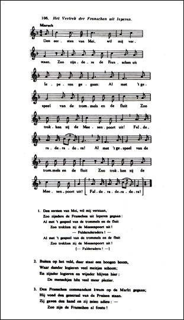
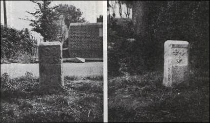
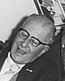
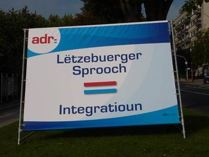

> nieuwsbrief
> 31e jg. - 4e trimester 2013
Mededelingen
Zannekin Ontmoetingsdag te Namen op
zaterdag 26 oktober 2013
 Verder in dit nummer
vindt u alle informatie met betrekking tot de
Zannekin-ontmoetingsdag te Namen. Net zoals onze Studie-uitstap
van dit voorjaar kadert ook deze activiteit binnen de herdenking
van de Vrede van Utrecht van driehonderd jaar terug. Ook Namen
werd dan een Barrièrestad binnen de Oostenrijkse Nederlanden,
waardoor de stad een Noord-Nederlands garnizoen binnen haar
muren kreeg. Ter plaatse zijn daar nog heelwat sporen van terug
te vinden.
Verder in dit nummer
vindt u alle informatie met betrekking tot de
Zannekin-ontmoetingsdag te Namen. Net zoals onze Studie-uitstap
van dit voorjaar kadert ook deze activiteit binnen de herdenking
van de Vrede van Utrecht van driehonderd jaar terug. Ook Namen
werd dan een Barrièrestad binnen de Oostenrijkse Nederlanden,
waardoor de stad een Noord-Nederlands garnizoen binnen haar
muren kreeg. Ter plaatse zijn daar nog heelwat sporen van terug
te vinden.
Zannekinfeest
te Rexpoede in Frans-Vlaanderen
En nog levensblijken – en dewelke! – van een
Frans-Vlaamse naamgenoot vreemd aan onze Stichting ZANNEKIN.
Naast het volkse vermaak zorgde de historicus Eric Vanneufville
– spreker op onze Ontmoetingsdag van 2013 te Villeneuve d’Ascq –
er voor de bezinnende ernstige noot met een lezing over de
geschiedenis van Frans-Vlaanderen.
Naast de Zannekin-reus in zijn geboortedorp
Lampernisse beschikt Rexpoede voortaan dus ook over een
gelijknamige reus. Het programma van deze festiviteiten (zie
affiche) werd ook in het Nederlands verspreid.
ZANNEKIN-Ontmoetingsdag
te
Namen
in het
kader van het Vrede van Utrecht 1713 en in de Barrièrestad Namen
op zaterdag 26 oktober
2013, in samenwerking met Orde van den Prince
Graafschap Namen, Orde van den Prince Land van Edingen en het
Algemeen-Nederlands Verbond Oost- en Zeeuws-Vlaanderen
Plaatsen van samenkomst: in de voormiddag:
Château de Namur’- Zaal “Guillaume III”, Avenue de l’Ermitage,
1 – 5000 Namen
In
de namiddag: Citadel van
Namen, Route Merveilleuse 64 – 5000 Namen
Programma:
10.00
uur: Welkom met koffie, thee, fruitsap, koekjes en gebakjes
10.20
uur: Verwelkoming door Mark Dubrulle uit Hastière (B),
voorzitter van de Orde van den Prince afdeling Namen
10.30
uur: Lezing “De Vrede
van Utrecht – 1713, ingrijpend voor de Nederlanden” door
Jan van Tongeren uit Maarssen (NL), vicevoorzitter van de
Stichting Zannekin
11.10
uur: Lezing “Het
Walenland binnen de Nederlanden” door Wim van Heugten uit
Duiven (NL), algemeen president van de Orde van den Prince en
bestuurslid van de Stichting Zannekin
11.30
uur: uitgebreid wandelbuffet
12.45
uur: Korte wandeling naar de Citadel
13.00
uur: In de videozaal: “2000 jaar Naamse geschiedenis”
13.30
uur: Rondleiding door de “Souterrains” (ondergrondse
bouwwerken), door de “Caserne des Hollandais”, de “Pont des
Hollandais”
14.30
uur: Toeristisch treintje langsheen de citadel
15.30uur:
Terug naar de Château de Namur voor een gezellige nababbel of
vrije tijd in de stad Namen
Deelnameprijs:
65,00 €uro voor leden en hun huisgenoten, (35,00 €uro voor jongeren
tot 15 jaar) - 70,00 €uro voor niet-leden
Dit
is een voor iedereen geldende all-in-prijs voor de hele dag, die
niet kan aangepast worden.
Hierin
zijn begrepen:
-
huur
van de zaal in de Château de Namur met projectieapparatuur en
klankinstallatie
-
ontvangst
vanaf 10.00 uur
-
uitgebreid
wandelbuffet inclusief drank
-
toegang
en gidsen in de citadel
-
toeristisch
treintje
Opgelet! Sinds
september 2013 vinden voor een paar jaar restauratie- en
renovatiewerken plaats in de citadel, waardoor bepaalde delen
tijdelijk niet meer toegankelijk zijn voor het publiek. We
krijgen niettemin te uitzondelijken titel de gelegenheid om de
meeste ruimten toch nog te bezichtigen.
SPERTIJD:
deelname schriftelijk of via e-post aanmelden vóór 18
oktober 2013
bij het ZANNEKIN-secretariaat, Paddevijverstraat 2, 8900 Ieper –
maurits.cailliau@skynet.be
en gelijktijdige betaling op een van onze rekeningen IBAN: BE13
4648 2202 5139 - BIC: KREDBEBB.
 Zicht op de Namense citadel
Zicht op de Namense citadel

Stadsplan Namen met links (SNCB) het
spoorwegstation
en midden-rechts het
Citadeldomein
De Kapelle van Sinte-Mulders, ’n
Iõngsje Hellege en Prinsesse
Op 10
augustus werd aan de Sinte Mildredakapel – Sinte-Mulders in het
dialect van de streek – te Millam nabij Waten, een memoriebord
ont-huld. Initiatiefnemers waren, naast ZANNEKIN,
het FVV (Forum van Vlaamse
Vrouwen) en EUVO (de
vereniging die sinds jaar en dag Nederlandstalige borden in de
Frans-Vlaamse Westhoek promoot). Ook de Orde van den
Prince-afdeling Land van Edingen werkte mee aan de realisatie
van dit initiatief.

Tijdens
de plechtigheid werd het woord gevoerd door Nederlanders uit
Noord en Zuid inclusief de Franse- of Zuidelijkste Nederlanden.
Respectievelijk namen ZANNEKIN
en het FVV het peter- en
het meterschap van dit initiatief op zich. Wim van Heugten, president van
de Orde van den Prince en bestuurslid van ZANNEKIN,
plaatste de heilige Mildreda in haar tijdskader en lichtte haar
betekenis toe (zie verder).
De E.H.
Cyriel Moeyaert lichtte op een schitterende wijze de religieuze
betekenis van Mildreda toe. Jan Paul Sepieter uit Niepkerke bij
Armentiers sprak in vloeiend Nederlands de menigte toe en wist
heel wat interessante zaken te vertellen. Jacques Delafosse uit
Tatinghem bij Sint-Omaars bracht in sappig Vlamsj een getuigenis
uit zijn jeugd tijdens dewelke hij van het naburige
Volckerinckhove naar Millam stapte om samen met zijn broer Guy
de mis in de Sinte-Mulderskapel te volgen. Jacques Porteman uit
Thernes bij Beauvais, wiens ouders in Millam wonen, gaf
interessante toelichtingen bij de kapel en het onderhoud ervan.
FVV-voorzitster Gudrun Crassaerts sprak vriendelijke dankwoorden
uit, waarna tot slot EUVO-voorzitter Karel Appelmans uit
Bray-Dunes het memoriebord onthulde. Een kleine honderd
aanwezigen vonden elkaar achteraf in de nabijgelegen Taverne Flamande voor
de lunch.

Het
tweetalige memoriebord geflankeerd door de Leo
Belgicus-vlag
met de pijlenbundel van de Zeventien
Provinciën
Sinte Mulders en de rol van de
vrouw in het Europa van de Frankische tijd
Wim van Heugten, Duiven
Dames
en heren, het is een hele eer voor me als Noord-Nederlander, om
u hier in het kort te mogen toespreken.
Mesdames et Messieurs,
C`est pour moi un grand honneur de vous faire un petit
discours, à cet endroit remarquable, situé tout près de la
chapelle sainte Mildrède. C`est en néerlandais que je commence
pour en finir avec un résumé en français.
De
plek waar we zijn is in meerder opzichten heel bijzonder. We
bevinden ons in een van de vele historische grensgebieden in
West-Europa. Iets verderop, in het stroomgebied van het
riviertje de Aa met het moerasgebied de Clairmarais/Klommeres en
het Ruhout, grensden Vlaanderen, het land van Guines en Artesië
aan elkaar, historische staatkundige entiteiten die pas met de
Franse Revolutie verdwenen.
Maar
het is ook het gebied waarin het christendom al vroeg een grote
uitstraling kende. In de Frankische tijd, en vooral in de 7e
eeuw, ontstonden hier onder invloed van Ierse en Engelse
monniken, en niet te vergeten dankzij doortastende vorstelijke
families, invloedrijke abdijen als de Sint-Bertijnsabdij bij
Sint-Omaars en de abdij te Sint-Rikiers. Volgens de
bibliotheekcatalogus van laatstgenoemde niet ver van de Somme
gelegen abdij bezat men er in het jaar 831 een ‘Passio Domini in theodisco
et latino’, een passieverhaal dus in de Germaanse
volkstaal en in het Latijn.
We
zijn dus in een gebied waar de taal- en cultuurgrens verliep en
in de voorbije eeuwen manu
militaris, of als gevolg daarvan, onder druk zijn komen te
staan ten nadele van het Nederlands. Maar ook voordien lag de
streek in een van de culturele interactiezones waaraan Europa zo
rijk is maar tevens tot de culturele en mentale rijkdom van het
Avondland behoort. Ik denk dan bijvoorbeeld aan de Elzas,
Zuid-Tirol. Het klinkt misschien heel gedurfd, maar Europa is
niet ontstaan in het Ile de France rond Parijs: daar ontstond
Frankrijk als idee en als staat. En bijvoorbeeld ook niet in de
Mark Brandenburg rond Berlijn, om van Londen maar te zwijgen.
Het huidige Europa ontstond in de interactiezones waar talen en
culturen elkaar vanouds ‘raken’, beter is misschien te spreken
van ‘ontmoeten’. Dáár was (en is) steeds wisselwerking tussen
mensen en ideeën die tot het op een christelijke grondslag
gestoelde Europa heeft geleid.
Achter
de stichting van abdijen als Sint-Rikiers, Sint-Bertijns,
stonden bovendien vorstelijke en vooraanstaande families. Uit
zo’n familie stamde prinses Mildreda, geboren in het midden van
de 7e eeuw als dochter van koning Merewald van Mercia en
Ermenburga, prinses van Kent. Ze was ook een bloedverwante van
de eerste christelijke koning Ashelred van Engeland en behoorde
onmiskenbaar tot de elites, of in een moderne term: ‘talking
classes’ (zoals de Amerikaanse socioloog Christopher Lasch, 1995
de nieuwe elites wel noemt) waarin het idee van Europa kon
ontvonken. Opmerkelijk is dat uit die kringen veel vrouwelijke
heiligen bekend zijn. Wat we daarvan moeten denken is nog
onduidelijk. Dergelijke heiligenlevens uit deze streek en
stammend uit de Frankische en Merovingische tijd kennen
doorgaans als vast gegeven dat de vrouwelijke heiligen uit
vorstelijke huizen stammen, soms voor hun vader/man moeten
vluchten zoals bijvoorbeeld Oda die in Noord-Brabant wordt
vereerd, maar ook vaak als kluizenares eindigen zoals Sinte
Mildreda.
Na een
periode doorgebracht te hebben in de Iers-Frankische en
invloedrijke abdij Chelles nabij Meaux ten oosten van Parijs,
vestigde prinses Mildreda zich tijdelijk als kluizenares hier
nabij Millam, wachtend op een schip dat haar over zou zetten
naar Engeland. Teruggekeerd in Engeland trok zij zich terug in
het klooster Minster nabij Thanet, dat nog door haar moeder was
gesticht en waar zij rond het jaar 700 overleed. Op fraaie wijze
worden taferelen uit haar leven in deze kapel afgebeeld op de
schilderijen, die Bernard Pieters uit Duinkerke in 1780 speciaal
vervaardigde. Onder de schilderijen zijn alleen Nederlandse
teksten aangebracht, en dat is minstens zo kenmerkend.
Gelet
op haar bijzondere maatschappelijke positie en het feit dat zij
heeft verbleven in een van de belangrijkste vrouwenabdijen van
haar tijd – die van Chelles - moeten we haar ongetwijfeld ook
rekenen tot de vrouwen die in het Europa van de 7e en 8e eeuw -
maar zoals ook later Hildegard van Bingen in de 11e eeuw, en de
Brabantse mystica Hadewych in de 13e eeuw - een belangrijke en
nauwelijks te onderschatte culturele stem hebben laten horen.
Mesdames et Messieurs,
en résumé: Au huitième siècle, la princesse anglo-saxonne
Mildrède élit domicile à cet endroit-ci pour vivre en reclus.
Depuis les temps les plus reculés les sphères d`influences
culturelles française, néerlan-daise et à un degré moindre
anglo-saxonne se côtoient dans cette région.
En outre, il y a
longtemps, mais pas loin d`ici, le Comté Artois francophone
confinait aux Flandres néerlandophones. Tel genre de zones
interactives et cul-turelles constituent à présent, pour ainsi
dire, la charpente des idées pour l`Europe dont les bases sont
établies pendant l`époque francique - le temps du vivant de
Mildrède. Sans doute, il faut compter Mildrède, vénérée ici, parmi les femmes qui
à l`aube de l`Europe du septième et du huitième siècle se sont
faites remarquées par leur grande influence au point de vue
culture. Un fait qui n`est certainement pas à sous-estimer.
Tout comme, entre autres, Hildegard de Bingen au onzième
siècle et Hadewych du Brabant au treizième.
Par conséquent
l`importance de Mildrède a été plus que locale et plus que
pu-rement religieuse. La commémoration de Mildrède nous fait
entrevoir égale-ment le rôle joué par les femmes aux premiers
jours de l`époque carolinienne.
_______________________
Wim
van Heugten, 10 augustus 2013, bij de Sinte Mulderskapel te
Millam in Frans-Vlaanderen, n.a.v. de onthulling van het
herinneringsbord.
Het
vertrek van de Fransen uit Ieper als gevolg van de
Vrede van Utrecht in 1713
Maurits
Cailliau
De Franse annexaties van Vlaanderen en van
de Franse Nederlanden
In
1659 werd de Vrede van de Pyreneeën gesloten ten gevolge waarvan
het grootste deel van Artesië, met o.m. de steden Broekburg en
Grevelingen door Frankrijk geannexeerd werden.
Het eerder door Engeland veroverde Duinkerke wordt in
1662 aan Frankrijk verkocht. Een jaar later al – 1663 – wordt de
Franse taal er door Lodewijk XIV verplicht ingesteld. Ook
Broekburg deelt dat verfransend lot. In 1684 wordt deze
maatregel uitgebreid tot de andere sinds 1678 bezette
Zuid-Nederlandse steden, waaronder Kortrijk, Ieper, Veurne en
Oudenaarde.
Zes
jaar na Duinkerke, in 1668 worden, ten gevolge van de Vrede van
Aken1, Rijsel, Dowaai, Orchies en Sint-Winoksbergen
door Frankrijk aangehecht. Negen jaar daarop, in 1677, liep de
Slag aan de Penebeek nabij Kassel faliekant af voor de
Nederlandse coalitielegers. Het
geschil werd beslecht bij de Vrede van Nijmegen (1678) ten
gevolge waarvan nu ook Kassel en Belle door Frankrijk
geannexeerd worden. Ook Ieper, Veurne en andere Zuid-Nederlandse
steden worden bij Frankrijk gevoegd.
Bij de
Vrede van Utrecht – 1713 – wordt, mits wat grenscorrecties, de
sindsdien definitieve nieuwe staatsgrens tussen Frankrijk en de
– wat het zuiden van de Nederlanden betreft – Oostenrijkse
Nederlanden vastgelegd. Ieper, Veurne, Menen en enkele andere
steden – die voortaan als Barrièresteden zullen fungeren – komen
terug naar de Nederlanden. Vlaamse steden als Kassel en Belle
evenwel blijven bij Frankrijk.
In dit
overzicht in een notendop gaan we uiteraard voorbij aan de
tijdelijke Franse veroveringen in het spoor van de Franse
Revolutie, toen zowat gans Europa, zij het tijdelijk – dat
verhaal eindigt in Waterloo - “Frans” werd. Aan het eind van de
rit werd in 1815 (Congres van Wenen) immers, voor wat de
Nederlanden betreft, teruggegrepen naar de grensafbakeningen van
1713.
Tussen 1678 (Vrede van
Nijmegen) en 1713 (Vrede van Utrecht) had Frankrijk het aldus
ook te Ieper – evenals te Veurne, Kortrijk en Oudenaarde - voor
het zeggen. Vanaf 1713 tot 1794 hebben de Habsburgers weer het
hoogste woord in hun Katholieke Nederlanden. De eerdere Franse
veroveringen binnen de zuidelijkste Nederlanden bleven echter
onaangeroerd; een situatie die zou herhalen na de val van
Napoleon. Reden waarom we het sindsdien over Frans-Vlaanderen en
– ruimer – de Franse of Zuidelijkste Nederlanden hebben.
Iepers interludium
In 1678 – op 13 maart –
hadden de legers van Lodewijk XVI Ieper omsingeld. Een week
later, op 25 maart, zien de Spaanse troepen het niet meer
zitten, wordt een staakt het vuren afgekondigd en volgt de
overgave van de stad. Tijdens het beleg had Nikolaas de
Kanonnier vanuit de stad de Franse koning ei zo na in zijn
kantonnement op het Wieltje dodelijk geraakt. Het vervolg van het verhaal was dat
Vauban opdracht kreeg nieuwe versterkingen aan te leggen,
waarbij onder andere de inundatie van Lichterveldt of Paddevijver –
in de Franse literatuur ook “Pas de Vivre” genoemd – aangelegd
werd, waarop thans de woning staat van uw kroniekschrijver!
In
1713 breekt, zoals vermeldt, een nieuwe Oostenrijkse Tijd aan
die aanvangt met de Vrede van Utrecht. In het spoor daarvan
krijgt Ieper, als gevolg van het Barrièretraktaat van 1715 een
Hollands garnizoen toebedeeld.
Te
Ieper is het vertrek van de Fransen in 1713 in
het collectieve geheugen opgeslagen dank zij het volkslied Het vertrek van de Franschen
uit Ieperen. Het
moet zijn dat van al die Franse oekazes op taalgebied (sinds
1684) weinig was blijven hangen. Al die tijd was de bezetter als
dusdanig ervaren geworden, en waren ze vreemden gebleven: de
“Franschen”, te onderscheiden van de “onzen”.
Den eersten Mei, wil mij verstaan,
Zoo zijndere de Franschen uit Ieperen gegaan;
Al met ’t gespeel van de trommels en de fluit
Zoo trokken zij de Meesenpoort uit!
- Falderalderadera –
Al met ’t gespeel van de trommels en de fluit
Zoo trokken zij de Meesenpoort uit!
- Falderadera –
Buiten op het veld, daar staat een hoogen boom,
Waar dander logieren veel meisjes schoon;
En zijnder logieren en wijnder blijven hier;
De menschjes hên veel meer plezier.
Den Franschen commandant kwam op de Markt
gegaan;
Hij vond den generaal van de Pruisen staan.
Zij gaven den hand en ze zeien adieu: -
Zo zijn de Franschen al foutu!
Ook
ander relicten die herinneren aan de Vrede van Utrecht – als
toenmalige grenspalen - zijn in onze contreien nog bewaard en
mits wat speurwerk terug te vinden. (Zie foto.)
Het
overlijden van de Oostenrijkse keizer Karel VI in 1740, het
aantreden van diens dochter Maria Theresia en de nieuwe Franse
inval in de Zuidelijke Nederlanden van Lodewijk XV, waarbij op 6
juni 1744 Ieper andermaal in Franse handen kwam, luiden een
nieuwe episode in. De nieuwe Franse bezetting zou vijf jaar
duren en eindigen met een nieuwe Vrede van Aken2 in
1748.
De
periode tussen de Vrede van Aken (1748) en het overlijden van
keizerin Maria-Theresia (1782) was voor onze streken een van de
rustigste die we ooit gekend hebben. Vanaf 1782, onder
het bewind van haar zoon Jozef II wordt het Barrièretraktaat
(daterend van 1713) opgezegd en valt de beslissing om de
versterkingen van de grenssteden met Frankrijk te ontmantelen.
De zuster van Jozef II, Marie-Antoinette huwt dan met de Franse
koning Lodewijk XVI. In
1783 is Ieper al gedemilitariseerd en, op de
hoofdomwalling na, ontmanteld.

Bron: Iepersch Oud-Liedboek, Brussel, 1962, pp. 271-273
______________
1 Vrede van Aken [1668] De Vrede van Aken werd op 2 mei 1668 tussen Frankrijk
en Spanje gesloten. Het
verdrag maakte een einde aan de Devolutieoorlog die in 1667 was
begonnen. Tijdens de vredesonderhandelingen trad Paus Clemens IX
op als bemiddelaar. De Vrede van Aken kende aan Lodewijk XIV de
door hem veroverde gebieden in Vlaanderen toe.
2 Vrede van Aken [1748] De Vrede van Aken werd ondertekend op 18 oktober 1748
en maakte een eind aan de Oostenrijkse Successieoorlog, die in
1740 was begonnen. Het
Vredesverdrag werd getekend in de Rote Saal in het
stadhuis van Aken. Onder de bepaling van het vredesakkoord
behield de Habsburgse keizerin Maria Theresia het bewind over de
Zuidelijke Nederlanden.

Voor- en achterzijde van
een Oostenrijkse-Franse grenspaal – in uitvoering van de
Vrede van Utrecht in 1713 - met de adelaar en de lelies,
zoals die
in de Zakstraat te Nieuwkerke (West-Vlaanderen) staat.
(Foto René Verstraete,
Watou
__________________
Een
eerdere versie van deze bijdrage is verschenen in het
heemkundigetijdschrift Iepers
kwartier, 49e jg., nr. 3/2013,
pp. 98-102.
Herbert
Paul Schaap
Geboren te: Groningen op: 3 november 1894 -
Overleden te: Zierikzee op: 12 juli 1982
Roeland Raes
Dr. Herbert Schaap is een van die té zeldzame
Nederlanders die zich levenslang Groot-Nederlander noemden en
zich zonder complexen voor de Nederlandse gedachte inzetten.
Herbert Paul Schaap werd in november 1894 in Groningen
geboren; zijn vader was advocaat en beleed de Joodse religie;
zijn moeder was Amerikaanse en Luthers. Herbert studeerde in
Groningen en kwam voor het eerst met jonge Vlamingen via de
‘Nederlandsche gymnasiastenbond’ in contact. In 1913 schreef
Schaap zich aan de universiteit van Groningen in voor de
rechtsfaculteit.
In
1914 moest hij zijn studie onderbreken voor legerdienst. De vier
oorlogsjaren besteedde hij om zijn verdere studies voor te
bereiden. En tijdens zijn studentenjaren was hij voorzitter van
de studenten-afdelingen van het Algemeen Nederlands Verbond, de
nog steeds bestaande verenging van en voor Nederlandstaligen,
die de laatste halve eeuw jammer genoeg haar strijdbaarheid
verloren is.
In
1922 werd hij ‘advocaat en procureur’ eerst in Groningen, dan in
Haarlem. Hij was intussen gehuwd en had drie kinderen. Na de
Eerste Wereldoorlog raakte Schaap bekend met tal van Vlaamse
activisten die in 1918 naar Nederland uitgeweken waren.
Meer
bepaald had hij een goede relatie met Professor Jozua de Decker
en priester Robrecht de Smet, redacteurs van het radicale
weekblad Vlaanderen,
en hij schreef er nu en dan in. In juli 1922 ging in Utrecht de
stichting door van het Dietsch Studenverbond met o.a. de
Vlamingen Rob van Genechten en Marcel Minnaert, en de
Nederlanders L.W. van Soest, H.G. Cohen Stuart en Schaap zelf.
Hij
was er lid van en zou de volgende jaren steeds ijveren voor
drukke contacten tussen Nederland en Vlaanderen. Met alle
uitingen van Groot-Nederlands geestesleven was hij nauw
betrokken. Als in 1926 het gezaghebbend maandblad de Dietsche Gedachte
verscheen werkte Schaap daar ook aan mee. Hij zou zich eerst uit
de DG terugtrekken
toen veel DSV’ers sympathie voor het nationaal-socialisme gingen
betonen. In 1927 verhuisde Schaap naar Den Briel, waar hij
griffier van het kantongerecht werd; na 10 jaar vervulde hij
dezelfde opdracht in Assen. Bij de Duitse inval bleef Schaap
buiten de collaboratie en weigerde ook het voorstel van
Nationaal Frontleider Arnold Meijer om aldaar propagandaleider
te worden.
De
bezetter spaarde hem (hij was half-jood én een gezien figuur in
de rechtswereld) maar in het najaar 1944 moest hij dan toch
onderduiken in een psychiatrische instelling ‘waar hij een half
jaar voor gek speelde’. In 1946 werd hij dan toch voor het leger
her opgeroepen waar hij, met de graad van majoor moest optreden
als ‘Commissaris van de krijgsraad te velde’. Vanaf maart 1950
kreeg hij eervol ontslag waarna hij zich als procureur in Assen,
later in Zierikzee vestigde. In die stad bleef hij na zijn
pensionering wonen, waar hij actiever was dan ooit. Vooral als
het ging om de verdediging en versterking van de
Groot-Nederlandse gedachte. Hij bleef vriendschap onderhouden,
ook met wie tijdens de oorlog om idealistische motieven aan de
‘verliezende kant’ had gestaan.
Twee
voorbeelden slechts: zijn bewondering voor dr. August Borms en
zijn actieve inzet voor Frans-Vlaanderen. Het lot van Borms die
in 1919 voor 10 jaren in de gevangenis moest blijven, trof
Schaap diep. Toen Borms in 1929 vrij kwam, werd hij ook in
Nederland gehuldigd. Vooral de in Den Haag georganiseerde
meeting werd door Schaap ingericht en kende ruime
belangstelling. Om de Vlaamse voorman ook materieel te
ondersteunen, werd het ‘Borms-fonds’ opgericht, met een
Nederlandse afdeling, waar Schaap penningmeester was.
Actieve
belangstelling
voor Frans-Vlaanderen. Tijdens zijn legerdienst – hij lag in de
grensstreek met de provincie Antwerpen – had hij één en ander
vernomen over de vereniging Pro Westlandia, (ook bezield door
Borms) die zich met zang en declamatie (voordracht van literaire
werken) in tal van Frans-Vlaamse gemeenten wijdde aan het
verspreiden van Vlaamse taal en cultuur.
Eerst
in 1928 raakte hij bevriend met twee jonge Frans-Vlaamse
priesters Jean-Marie Gantois en Marcel Janssen, die op hem diepe
indruk maakten. Schaap besloot, zich naar zijn mogelijkheden in
te zetten voor het verdedigen van de eigen cultuur in de regio.
Meer bepaald met priester Gantois onderhield hij drukke
contacten en ondernam hij meermaals tochten in Frans-Vlaanderen;
voor hem bevatten de Franse Nederlanden véél meer dan de
Westhoek! Hij rekende er zowel Grevelingen en Ariën a.d. Leie,
als Rijsel en Dowaai bij.
Schaap
was een beminnelijk man en een goede organisator. Hij valt dan
ook niet te verwonderen dat hij bij de (her)oprichting van de
Heel-Nederlandse Vereniging ZANNEKIN haar eerste voorzitter
werd. Jaren later werd hij erevoorzitter tot bij zijn
overlijden. In Vlaanderen betoonde hij blijvende belangstelling
en sprak er vaak, b.v. op de Frans-Vlaamse Cultuurdagen van
Waregem. Graag werkt hij mee aan nationalistische Vlaamse bladen
b.v. aan Dietsland-Europa.
Herbert
Schaap was een man die in het zo conformistische Nederland zijn
Groot-Nederlandse overtuiging trouw bleef en daar vaak met
enthousiasme over getuigde. Zo zijn er helaas te weinig in het
Noorden! Zijn beroepsloopbaan verliep voorspoedig, maar zijn
mening bleef ongeschonden. Een voorbeeldig man.
-----------------------------------
Bron: Laagland, 04-2010 [43] – Nationalistische figuren
De Lage Landen in
Transsylvanië
Waarom
trokken bewoners van de Lage Landen — onder hen ook veel
Vlamingen — naar het verre Transsylvanië, dat velen onder ons
enkel kennen als het land van Dracula?
In
zijn einde vorig jaar verschenen boek De Lage Landen in
Transsylvanië - Nederlanders, Vlamingen en Walen in de
kolonisering van Transsylvanië beschrijft Jean-Paul
Van der Elst uitvoerig het hoe en het waarom van deze
periode in de geschiedenis van onze streken én in deze van
Hongarije. Welke sporen hebben zij er nagelaten in de oorkonden
van het Hongaarse koninkrijk? In de namen van de dorpen en in de
dialecten van deze “Sachsen” die er tot de omwenteling van 1989
nog talrijk woonden?
Op
deze en nog vele andere vragen geeft de auteur in dit boek een
doorgaans goed onderbouwd antwoord. Hij is er trouwens in
geslaagd om de massa informatieve elementen in een leesbare
tekst onder te brengen. Dat is een van de vele verdiensten van
deze publicatie en iedereen zal begrijpen dat het geen sinecure
geweest is om dat tot een goed einde te brengen. Alles wordt
ondergebracht in een breed panorama waarin de vele details niet
verdrinken in een onleesbare opsomming van namen en namen en nog
eens namen. Achteraan wordt alles dan mooi afgerond met tien
bladzijden illustraties.
Deze
over het algemeen aan weinigen bekende periode uit de Europese
geschiedenis wordt door de auteur terug in het volle daglicht
geplaatst en we kunnen de lectuur van deze 130 bladzijden alleen
maar aanbevelen. In de overtuiging dat men via de in voetnoten
verwerkte bibliografie verder zal willen gaan in de kennismaking
met deze emigratiegolf uit onze verre geschiedenis.
(Willy Cobbaut,
in Mededelingen VVNA,
nr. 3/2013.)
________________
N.a.v.
Jean-Paul van der Elst, De
Lage Landen in Transsylvanië, 130 blz. plus
10 blz. illustraties. Prijs: 17 euro (incl. portkosten).
Bestellen via jeanpaul.vanderelst@gmail.com
of bij de auteur. Rek. BE1O 7995 0584 5504 van J-P Van der
Elst, Peizegemstraat 138 B, 1785 Merchtem. Levering na ontvangst
van de betaling. (1SBN/EAN 9789082011302)
Marten Heida
Een bijgesteld beeld
Sinds 1614 was
Wezel een door de Spanjaarden bezette stad. In deze situatie
kwam een keer op 19 augustus 1629; op die dag slaagde Otto van
Gent erin vanuit Emmerik Wezel in te nemen. Ter gelegenheid van
dit voor de Republiek belangrijke feit werden meerdere
gedenkpenningen geslagen. Naar de mening van Günter Warthuysen
laat één daarvan het verschil zien tussen wat werkelijk gebeurd
is en het propagandistisch aspect. In de tekst op de keerzijde
is namelijk sprake van “herkregen vrijheid”. En daar zet
Warthuysen een vraagteken bij. Want wat waren in het kader van
de machtswisseling de gevolgen met betrekking tot de
tegenstellingen op godsdienstig gebied?
Om daar een goed zicht op te krijgen is het volgens
hem een goede zaak de historische achtergrond erbij te
betrekken. Hij stelt dat de hoofd-oorzaak van het overslaan van
het Spaans-Nederlandse conflict naar de Nederrijn de
godsdienstige dimensie van de strijd was. Zo was daar aan de ene
kant de Spaanse inzet voor de katholieke zaak terwijl aan de
andere kant de Staten-Generaal ijverden voor de verbreiding van
het geloof naar gereformeerd belijden.
Tegen deze ideologische achtergrond moeten twee
gebeurtenissen in ogenschouw genomen worden die er de oorzaak
van zijn geweest dat de oorlogsvonken oversloegen naar het
hertogdom Kleef en aangrenzende gebieden. Als eerste noemt hij
het zich afkeren van het katholicisme van de Keulse
aartsbisschop Gebhard Truchsess von Walsburg in 1582. De tweede
is de strijd om de erfopvolging na de dood van Johann Wilhelm,
de laatste hertog van Kleef-Gulik-Berg in 1609; hij stief
kinderloos.
Het gevolg daarvan is geweest dat als in 1618 de
Dertigjarige Oorlog uitbreekt er sprake is van een machtsvacuüm
in het noordelijk deel van het Nederrijnland. Vreemde
machthebbers beschouwen het gebied als een soort oefenplaats.
Dit zou niet hebben kunnen gebeuren als Pfalz-Neuburg en
Brandenburg erin geslaagd waren tot overeenstemming te komen om
hun gebieden tegen hen af te schermen.
Het tegenovergestelde deed zich zelfs voor te weten
een verscherping van de godsdienstige tegenstellingen. Zo gingen
de Brandenburgers over van het Lutherse naar het Calvinistische
geloof en verzekerden zich daardoor van de sympathie van de
Staten-Generaal terwijl men in Pfalz-Neuburg aanhanger werd van
het katholicisme en zo zeker kon zijn van de steun van Spanje.
Het is in dit “klimaat” dat in 1614 de stellingen worden
betrokken: de troepen van de Republiek bezetten de steden Gulik,
Goch, Rees en Em-merik terwijl de Spanjaarden zich meester maken
van Wezel. Het is
deze stad die op 19 augustus 1629 door Otto van Gendt voor de
Republiek wordt veroverd.
Voor Wezel zou deze verovering in het teken moeten
staan van “herkre-gen vrijheid”. Volgens Günter Warthuysen kan
de vraag gesteld wor-den of die aanduiding wel in
overeenstemming is met de werkelijkheid. Als de Spanjaarden in
1614 Wezel bezetten stellen ze zich aanvankelijk neutraal op
inzake de godsdienstige rivaliteit. Pas in juni 1628 wordt
besloten de aan Willibrord en Antonius gewijde kerk terug te
geven aan de katholieken. Echter van lange duur is dit bezit
niet geweest; direct na de verovering van de stad door de
Staatse troepen wordt deze beslis-sing teruggedraaid. Het laat zich verstaan dat deze
maatregel door de katholieken werd ervaren als een vorm van
discriminatie; voor hen hield de machtswisseling allesbehalve
een bevrijding in. Maar dat gold evenmin voor de protestantse
meerderheid; het éne kwaad had ook voor hen plaats gemaakt voor
het andere getuige het roven en plunderen van de nieuwe
“gasten”. Vandaar dat het stadsbestuur pogingen
onderneemt de Republiek ertoe te bewegen het garnizoen terug te
trekken. Er was Wezel alles aan gelegen de neutrale status van
voorheen te handhaven. Het
zou echter blijken dat dit pogen vergeefs was.
______________
Bron:bijdrage van Günter Warthuysen in
het Jahrbuch
Kreis Wesel 2013.
Marten Heida
Prins
Willem Alexanderpark 53,
NL 3905CB Veenendaal
Het
laatste woord
Leo
Camerlynck
Luxemburgs in
Luxemburg
In het
Groothertogdom Luxemburg heeft het Luxemburgs sinds 1984 de status van een officiële
taal van het land gekregen. Het Duits
en het Frans worden als hulp- en werktalen erkend
en gebruikt.
Om en bij 250.000
mensen hebben het Luxemburgs als eerste taal en nog eens 50.000
als tweede taal. De meerderheid van de Luxemburgers heeft het
Luxemburgs als moedertaal, en die taal speelt een nog grotere
rol in de media, het onderwijs en het openbaar leven. In het
hoger onderwijs domineren het Frans en het Duits,
respectievelijk voor de humane wetenschappen en de technische
studies.
Dagbladen en ruim
verspreide publicaties zijn doorgaans in het Duits en
gedeeltelijk in het Frans. Het Luxemburgs is zeer levend en
levendig als informele omgangstaal, en handhaaft zich zeer goed.
Het schrijdt zelfs vooruit. In het Luxemburgse parlement wordt nog haast uitsluitend
Luxemburgs gesproken.
Evenwel ten
gevolge van het grote aantal buitenlanders dat in Luxemburg, en
hoofdzakelijk in diens hoofdstad, woont en werkt, en van wie de
meesten het Frans als eerste of tweede taal Frans spreken,
dringt het Frans zich op. In de talrijke Europese instellingen
komt steeds meer Engels voor naast Frans en Duits. Het
Luxemburgs is hier zo goed als onbestaand.
Tegen deze gang
van zaken rijst steeds meer protest. De ‘Alternative
Demokratësch Reformpartei’ of ADR vindt het niet kunnen dat een
Luxemburger of Luxemburgstalige op veel plaatsen in zijn
hoofdstad en delen van zijn Groothertogdom niet meer of
nauwelijks in zijn Luxemburgse taal aan zijn trekken komt. Eén
van hun slagzinnen bij de verkiezingen van oktober 2013 luidt:
“Lëtzebuerger Sprooch = Integratioun” met een duidelijke
Luxemburgse vlag.

In Arelerland of
het Land van Aarlen, rond de Belgische
stad Aarlen (Arlon) en in Buchholz wordt van oudsher het
Luxemburgse dialect van het Duits gesproken. Mede door een sterk
verfransingsbeleid werd in de stad Aarlen het Luxemburgs
teruggedrongen. In de omliggende gemeenten komt het nog voor.
Sinds 24 december
1990 erkent de Franse Gemeenschap het
Luxemburgs onder de naam Francique (Frankisch) als
regionale taal. Sommige straatnaamborden zijn tweetalig (Frans
en Luxemburgs) en er worden cursussen Lëtzebuergs georganiseerd
doch daar blijft het bij.
Leo Camerlynck
“De Zavelberg”
Edouard Michielsstraat 51
B – 1180 UKKEL / Brussel
t. 00 32 485 630 227 e-post leo.camerlynck@skynet.be